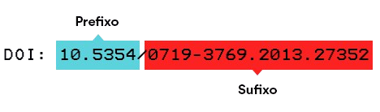
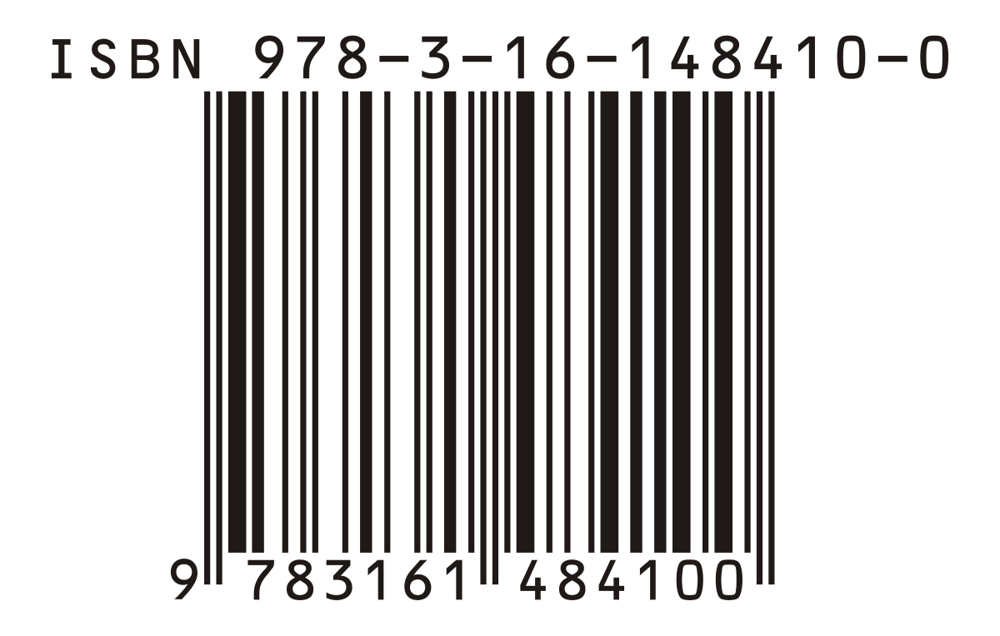

easyABNT
easyABNT
Digite o título, DOI ou ISBN que deseja referenciar
O DOI é a sigla para Digital Object Identifier, ou Identificador de Objeto Digital. Trata-se portanto, de um código alfanumérico exclusivo atribuído a documentos digitais , como artigos científicos, teses, dissertações, e-books, entre outros.
Já ISBN (International Standard Book Number/Padrão Internacional de Numeração de Livro) é um padrão numérico criado com o objetivo de fornecer uma espécie de “RG” para publicações monográficas, como livros, artigos e apostilas.
